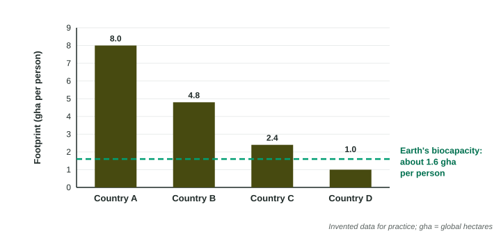

Ecological Footprints
An ecological footprint is the land and water area needed to supply a person's or population's consumption and absorb its carbon dioxide; a carbon footprint counts emissions only.
Part 1 · Hook
Why this matters
Part 2 · Before you start
What this builds on
Part 3 · Prerequisite check
Quick check before you start
1. A country of 50 million people uses 400 million metric tons of grain. What is its use per person?
- 8 metric tons per person
- 0.125 metric tons per person
- 350 million metric tons
- 20,000 metric tons per person
Show the answer
Per capita = total ÷ population: 400 million ÷ 50 million = 8.
- Correct: 8 metric tons per person:
- 0.125 metric tons per person:
- 350 million metric tons:
- 20,000 metric tons per person:
2. Why does it take more land to feed a person on beef than on grain?
- Energy is lost at each trophic level, so many kilograms of feed make one kilogram of beef
- Cattle grow faster than grain, so they need more space
- Beef has fewer calories than grain
- Grain needs no land to grow
Show the answer
Only about 10% of energy passes from one trophic level to the next.
- Correct: Energy is lost at each trophic level, so many kilograms of feed make one kilogram of beef:
- Cattle grow faster than grain, so they need more space:
- Beef has fewer calories than grain:
- Grain needs no land to grow:
Part 4 · See it
See it first

Part 5 · Step by step
How it works, step by step
- A person eats, travels, builds and buys goodscropland, pasture, forest, fishing grounds and built land are used to supply them
- Burning fossil fuels releases carbon dioxideforest area is counted to absorb it, the largest part of most footprints in wealthy countries
- The total area per person is larger than Earth's biocapacity per personpeople are using resources faster than nature renews them
- Using resources faster than they renewforests, fisheries and soils are run down and carbon dioxide builds up in the air
Part 6 · Key ideas
Key ideas
- An ecological footprint is the land and water area needed to supply what a person or group uses and to absorb its carbon dioxide, often in global hectares (gha) per person.
- A carbon footprint counts only greenhouse emissions, in metric tons of carbon dioxide; it is one piece of the ecological footprint.
- Footprints grow with consumption: diet (especially meat), energy use, travel and goods. Wealthy countries have footprints several times those of poor countries.
- When the world's total footprint is larger than its biocapacity, resources are used faster than they renew (overshoot).
Part 7 · Misconception
A common mistake
The wrong idea: A country with a large population must have a large ecological footprint per person.
What actually happens: Footprint per person depends on how much each person consumes, not on how many people there are. A small, wealthy country can have a far larger footprint per person than a large, poor one; the total footprint is the per-person footprint times the population.
Part 8 · Check yourself
Check yourself
Exam-style questions. Anything you miss goes into your review queue.
1. What does an ecological footprint measure?
- The land and water area needed to support what a person uses
- The number of species that live in the natural area around a person's home
- The total mass of trash a person throws away each year
- The amount of fresh water a person drinks each day
Show the answer
It is an area: productive land and water needed for a person's consumption and wastes.
- Correct: The land and water area needed to support what a person uses: Right: an area of land and water.
- The number of species that live in the natural area around a person's home: Species richness is a measure of biodiversity.
- The total mass of trash a person throws away each year: Trash is one waste, not the footprint.
- The amount of fresh water a person drinks each day: Drinking water is a tiny part of what the footprint counts.
2. How is a carbon footprint different from an ecological footprint?
- It counts greenhouse emissions only, as a mass of carbon dioxide
- It counts just the land used to grow a person's food, in hectares
- It is a larger number than the ecological footprint for each person
- It counts the fresh water a person uses each year, in liters
Show the answer
The carbon footprint is a mass of emissions; the ecological footprint is an area that includes land to absorb those emissions plus food, wood and built land.
- Correct: It counts greenhouse emissions only, as a mass of carbon dioxide: Right: emissions only, as a mass.
- It counts just the land used to grow a person's food, in hectares: Land for food is part of the ecological footprint.
- It is a larger number than the ecological footprint for each person: They are in different units, so one is not "larger".
- It counts the fresh water a person uses each year, in liters: Water use is a separate measure.
Model or diagram
Ecological footprint per person in four countries
3. Which countries in the graph have a footprint per person larger than Earth's biocapacity per person?
- A, B and C
- A and B
- D
- A, B, C and D
Show the answer
A (8.0), B (4.8) and C (2.4) are above the 1.6 gha line; D (1.0) is below it.
- Correct: A, B and C: Right: three countries are above the line.
- A and B: C, at 2.4, is also above 1.6.
- D: D is the one country below the line.
- A, B, C and D: D is below the line.
4. If everyone on Earth lived like the average person in country A, about how many Earths would be needed? (Divide A's footprint by the biocapacity per person.)
Type a number. Scale words (2.5 million) and powers of ten (2.5 × 10^6) are read.
Show the answer
- Answer: 5
5. Write the setup for the percent by which country B's footprint per person is above Earth's biocapacity per person, then give the answer.
Type the setup as on the exam, with brackets and units, then the answer.
Show the answer
- Setup: ; answer 200 %
6. Country D's footprint is below the biocapacity line. Which is the most likely reason?
- People in D use less meat, energy and goods per person
- D has more productive land than the other countries
- D has a larger population, which spreads the footprint out
- D imports its food, so food does not count in its footprint
Show the answer
A low footprint per person usually reflects low consumption, often because of low income.
- Correct: People in D use less meat, energy and goods per person: Right: low consumption per person.
- D has more productive land than the other countries: Land available is biocapacity; the footprint measures use.
- D has a larger population, which spreads the footprint out: Population does not change the per-person footprint.
- D imports its food, so food does not count in its footprint: Imported food still counts in the footprint of the people who eat it.
Data
One student's yearly carbon footprint
| Activity | Amount per year | Carbon dioxide released |
|---|---|---|
| Driving a car | 8,000 km | 0.2 kg CO2 per km |
| Home electricity | 3,500 kWh | 0.4 kg CO2 per kWh |
| Flights | 2 round trips | 600 kg CO2 per round trip |
| Food | 365 days | 5 kg CO2 per day |
7. How many kilograms of carbon dioxide does the student's driving release in one year?
Type a number, then its unit (kg). Scale words (2.5 million) and powers of ten (2.5 × 10^6) are read.
Show the answer
- Answer: 1600 kg
Part 9 · Summary
Summary
Part 10 · Up next
What comes next
Part 11 · Connections